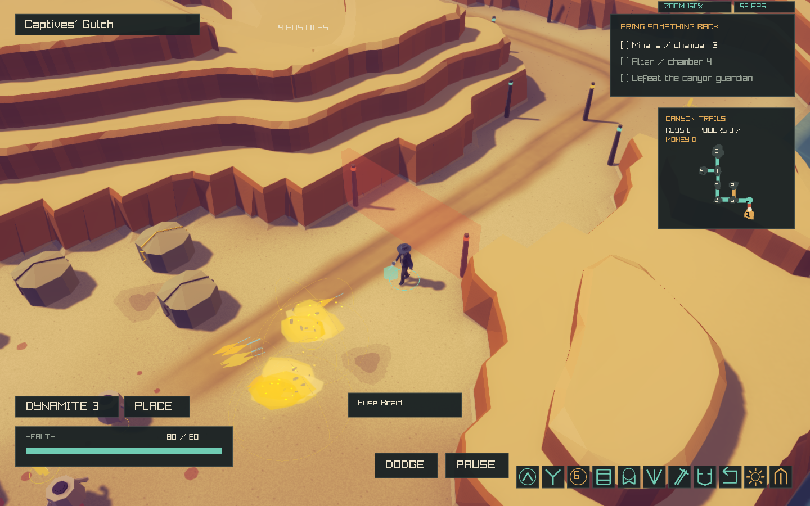
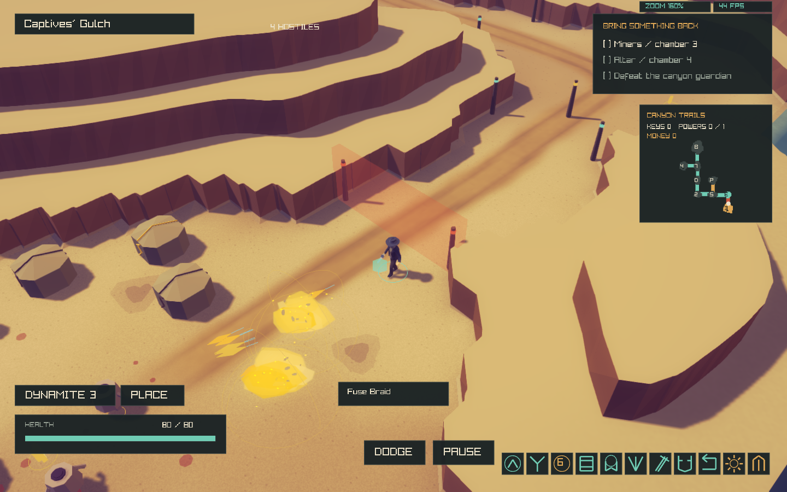
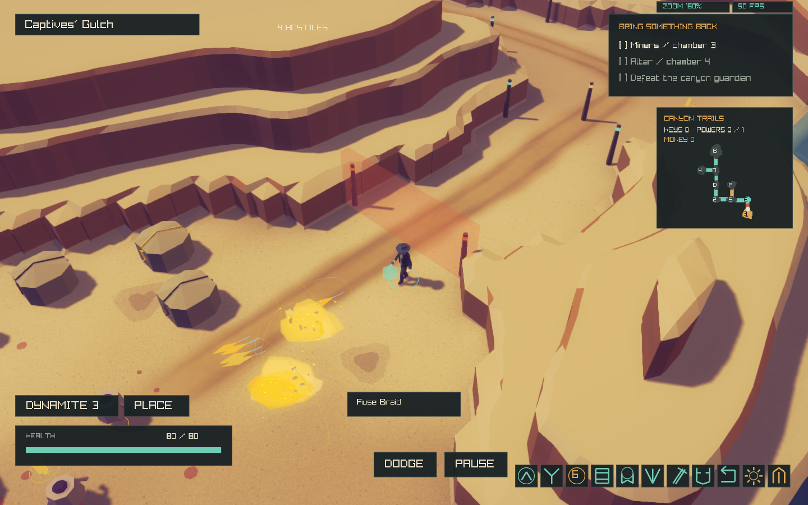
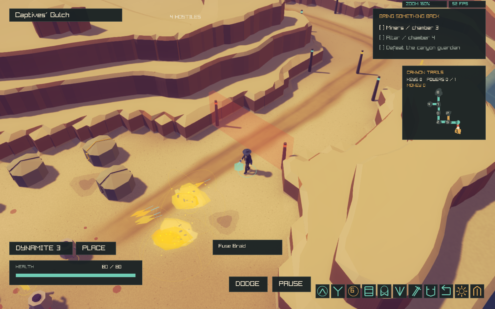
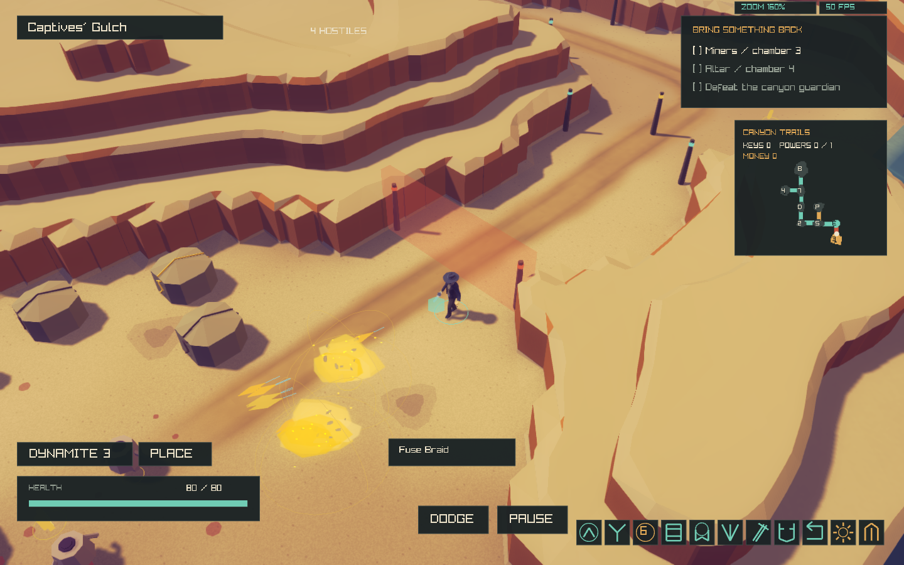
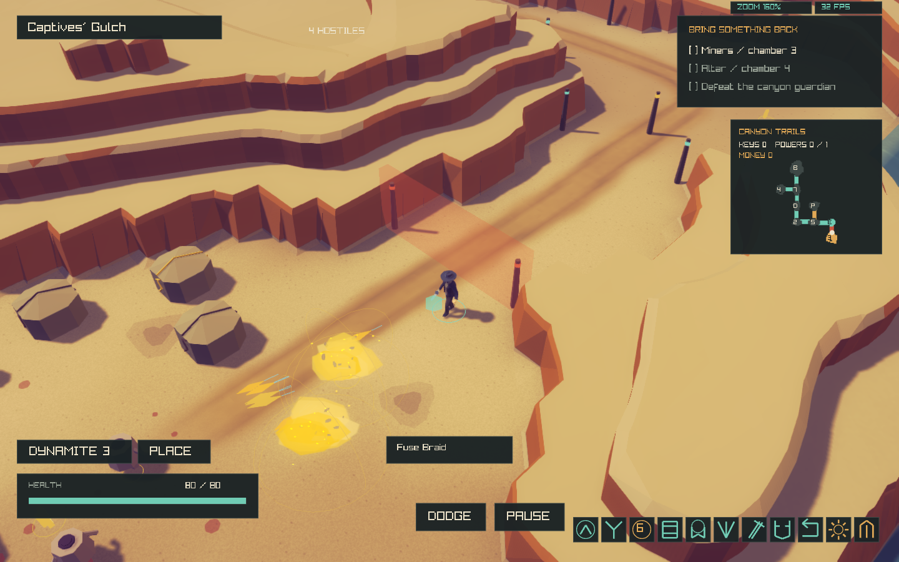
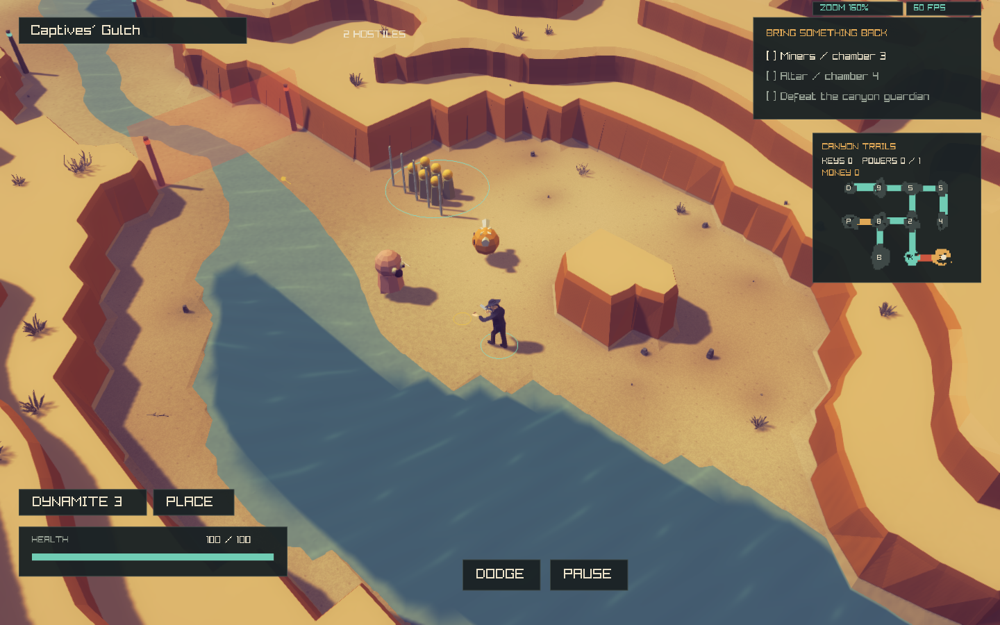
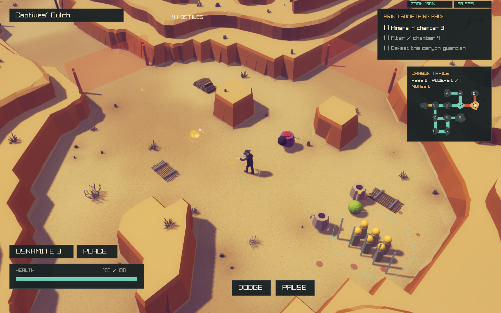

Archived earlier pass. See the current reference matching pass for the latest geometry and foliage.
DeathWard · Canyon correction · 1 November 2026
Cliff faces and real ledges.
The sloping heightmap treatment from commit 32fa160 is replaced with explicit contour geometry: broad caps, short chamfers, and steep extruded walls. This report preserves the rejected result, undecorated iterations, target comparison, final captures and test evidence.
The target is an art-direction reference, not a matching seed. Captures use the existing camera at 160% zoom, Original style and 1440 × 900. No camera, UI, controls, combat, enemy AI, room graph or collision code was changed.
Automated validation: finished
Target beside current geometry
 Target: short sandstone faces, broad caps, irregular stepped formations.
Target: short sandstone faces, broad caps, irregular stepped formations.
Actual game: final geometry without decoration. This isolates surface orientation and silhouette.Target with its vegetation. Actual game with existing grass, dry bush, stones and two cactus variants. Enemy bodies, gates and HUD are unchanged.
Actual game with existing grass, dry bush, stones and two cactus variants. Enemy bodies, gates and HUD are unchanged.
What was wrong, and what changed
The previous version only modified vertex heights on the original 1.25 m lattice. Its renderer still connected every pair of heights with triangles, producing broad embankments, stretched faces and pointed ridges. Calling that equivalent to the target was incorrect.
The new mesh clips the original source triangles into irregular contour polygons. Each elevation band gets its own approximately level cap; contour edges get wall quads triangulated internally. Adjacent tiers are never joined by a broad heightmap slope. Short top-edge chamfers provide faceting; paired coplanar wall triangles share material variation so their internal diagonal is not painted into the surface.
The outer wall keeps its original ground-contact contour. Its upper rim is slightly recessed, removing thin top spikes while making a short steep buttress rather than widening into the room. Terrace height limits and widths vary coherently with the visual seed; the distant field drops to lower tiers. Top undulation is restrained and remains nearly horizontal.
Iteration record: undecorated geometry

1 · Extruded walls · Slopes removed, but overly uniform continuous ribbons and perfectly sharp edges.
2 · Small chamfers · Narrow top bevels added; stretched rim corners were still visible.
3 · Coherent height variation · Caps become gently uneven and upper levels vary locally; outer contour still needed correction.
4 · Proportions and sandstone · Lower total cap range and a local warmer face material. Lighting system unchanged.
5 · Recessed upper rim · Canonical ground contact retained; upper rim recessed to remove pointed top wedges.6 · Final contour variation · More local tier termination, lower distant terrain, signed shelf depth to seal rim transitions, and exact visual ray tests.Previous slope mesh versus corrected mesh
Combat scene · same seeded camera and frame
Previous slopesExtruded cliffs Full-resolution PNG · Capture logQuarry scene · same seeded camera and frame

Previous slopesExtruded cliffsWorks scene · same seeded camera and frame

Previous slopesExtruded cliffsComparison with the target
Architecture, picking and collision
Arena::canyon and the room graph stay authoritative for movement, flying-enemy placement, projectile collision, roads, river crossings and locks. CanyonAppearance now owns explicit triangle lists with original-cell ranges. CanyonScene builds the existing spatial chunks from those triangles; wall fading and rendered picking use the same explicit mesh. Visual ray queries use cell traversal and scale-relative triangle tolerances so narrow clipped polygons cannot report false hits far outside the rendered face.
Walkable ground triangles retain the original terrain. Steep outer walls meet the original floor contour. New decoration stays cosmetic. Original taller physical volumes still stop high shots above a lower visual ledge; that existing visual/physical height separation remains a limitation of preserving gameplay collision.
The sandstone adjustment is local to the new cliff shader path. It separates brown/orange faces from sandy horizontal caps; the existing lighting, shadows, post-processing and legacy materials remain intact.
Configuration and rollback
Use assets/visual/canyon.cfg, copied beside the executable under build/assets/visual/. Restart after editing the runtime file. Geometry is deterministic from the visual seed. enabled 0 still restores the original tall canyon and original dressing path.
./build/deathward --expedition --theme canyon --style original
# Original geometry and decoration
DEATHWARD_CANYON_CONFIG=assets/visual/canyon-legacy.cfg ./build/deathward
# Capture final undecorated geometry with saved configuration
DEATHWARD_CANYON_CONFIG=docs/reports/canyon-extruded-cliffs/geometry-only.cfg \
./build/deathward --mute --smoke --theme canyon --style original \
--scene combat --frames 120 --screenshot /tmp/canyon-geometry.png
Validation and measurements
The geometry suite covers 12 seeded maps, deterministic caps/walls and dressing, dry/boundary/interior rivers, collision hashes and 180 per-room collision/trace comparisons, support, density isolation and rollback. GPU checks cover five seeds, both themes, mesh/ray agreement and whole-footprint cactus support. Occlusion/input checks cover all three hubs, canyon/wide views, hidden enemies and actual left/right/Shift fire. Pixel-exact restoration uses a dry fixture because the lowered cliffs reveal animated river water. Separate river suites retain river coverage.
{
"maps": "12",
"categories": "4",
"asset_roles": "4",
"candidates": "20644",
"collision_room_checks": "180",
"original_highland_median": "7.55781",
"visual_highland_median": "3.55705",
"original_max": "10.7415",
"visual_max": "6.79041",
"appearance_mean_ms": "303.536"
}Surface-area totals across 12 maps: caps: 1,269,003 m², walls: 389,160 m², bevels: 132,971 m². Caps are within approximately 11° of horizontal; steep faces are within approximately 20° of vertical. Narrow chamfers account for the remaining rock surface.
Performance
Three alternating pairs, same final executable and asset library: legacy original versus corrected extrusion, 240 uncapped stress frames, seed 1866, 1440 × 900. No other native graphics suites or builds run during measurement. This enemy/projectile stress benchmark is not ordinary gameplay FPS. Clipping and wall extrusion add triangles; the previous report’s “no added triangles” claim applies only to the superseded heightmap version.
Measured scene: legacy: 113388 triangles, 105 chunks, 198 scenery instances (68 vegetation), extruded: 236924 triangles, 105 chunks, 635 scenery instances (329 vegetation).
Triangle lists are indexed by source cell for ray tests; existing render chunks and asset batching are reused. Cap faces remain coplanar where possible, hiding internal triangulation. Geometry has an explicit test budget below six triangles per original cell on the sampled maps. One-time preparation cost is recorded separately above.
legacy 1 · legacy 2 · legacy 3 · extruded 1 · extruded 2 · extruded 3 · Machine-readable results
Changed files and limitations
The new algorithm lives in src/world/CanyonAppearance.*; rendering, fading and local material treatment in src/render/CanyonScene.cpp. WesternScene.*, its asset catalog/library and scripts/import_western.py add the existing dry bush and recognize vegetation. Geometry, graphics and occlusion tests are updated for extruded rather than heightmap surfaces. No gameplay source files were edited. The original target, rejected screenshot, intermediate images and raw logs are preserved here.
Remaining: exact art-direction review against the supplied concept, especially terrace continuity and local block shapes. More green shrubs/trees from the existing library remain to be selected; current green vegetation uses the two packaged cacti. Physical height volumes remain taller than the visible cliffs. WASM checks were omitted under the standing user waiver. This report distinguishes those remaining differences from verified geometry and gameplay invariants.
Native build log · User’s rejected in-game screenshot · Archived heightmap report